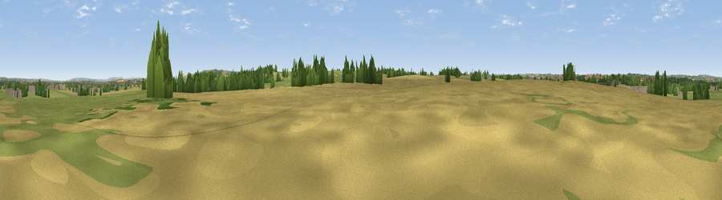

Viewpoint near Rudge
#35383 in England · top 69% of its area beats it · near RudgeWhere it is
The exact computed spot (ST 81913 53217). Click the marker for map links.
The view, rendered

A 360° render of this exact spot computed from the terrain model, tree cover and land cover — summer colours, afternoon light, calibrated against photographs of famous viewpoints. Real trees, hedges and buildings will differ in detail.
The panorama
Grey silhouette: terrain skyline in each direction (720 bearings, Earth curvature and refraction included). Dashed green: skyline with trees (+15 m) and buildings (+8 m) as obstacles. Blue strip: how far the ground is visible on each bearing.
Where the view opens
Wedge length = distance to the farthest visible ground on that bearing (vegetation-aware). Rings at 10, 25 and 50 km.
What fills the view
49% grassland · 39% cropland · 10% woodland · 2% built-up
Angular shares of the visible panorama (visual magnitude), not map area. Landscape diversity 0.45 (0–1 Shannon).
Key numbers
More beautiful places nearby
The staircase of upgrades: each row has a higher view potential than everything closer. Driving times are estimates from straight-line distance, calibrated against real road routing — check an actual route before setting out.
| Place | Direction | Drive | Score |
|---|---|---|---|
| Viewpoint near Wingfield | NNW · 3 km | ~7 min | 45.8 |
| Viewpoint near Dilton Marsh | SSE · 5 km | ~10 min | 55.5 |
| Viewpoint near Westbury | ESE · 6 km | ~14 min | 60.4 |
| Viewpoint near Upton Scudamore | ESE · 7 km | ~15 min | 67.0 |
| Viewpoint near Westbury | ESE · 7 km | ~15 min | 71.3 |
| Viewpoint near Bratton | E · 8 km | ~16 min | 73.2 |
| Cley Hill | SSE · 9 km | ~17 min | 76.8 |
| Viewpoint near Lamyatt | SW · 23 km | ~38 min | 77.8 |
51.27781, -2.26069 · source: osm peak · position refined by local search. Computed location — check access rights before visiting.